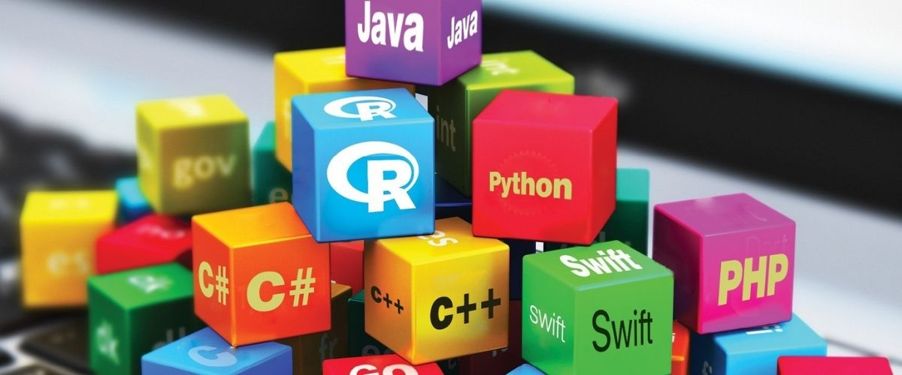

Nem todas as linguagens de programação duram para sempre. Na verdade, mesmo as mais populares caem em desuso à medida em que as novas gerações de desenvolvedores abraçam outra linguagem e frameworks que encontram e acham mais fáceis de trabalhar.

Essa foi uma das top 10 linguagens mensais da lista da TIOBE (empresa / Índice que mede e classifica a popularidade de linguagens de programação mensalmente com base na frequência de pesquisa da linguagem em motores como Google, Wikipedia e YouTube) e os desenvolvedores agradeciam com a facilidade de aprendê-la. Ela afundou no ranking da TIOBE, de nono para décimo segundo lugar (antes de cair para décimo sexto).
Várias empresas e projetos importantes (Facebook, GitHub, etc.) usaram o Haskell para implementar programas vitais de um ponto a outro. Entretanto, Haskell continua estagnado no ranking de linguagens da RedMonk (empresa de análise da indústria focada em desenvolvedores de software).
O Objective-C da Apple tem 35 anos e a 5 anos atrás, os executivos da Apple subiram ao palco para anunciar o Swift (especialmente porque se tornou mais rico em configurações), porém Objective-C não caiu tantas posições na lista de linguagem mais populares como as pessoas esperavam. O motivo disso são os 35 anos de legado do código e o fato de que muitos desenvolvedores simplesmente preferem trabalhar com uma linguagem que sempre usavam.
Antigamente, o R era uma linguagem de dados extremamente popular. Entretanto, parece que o Python está rapidamente engolindo a participação de mercado. Apesar do R continuar sendo utilizado por acadêmicos e cientistas de dados, as empresas interessadas em análise de dados estão preferindo Python pela escalabilidade e facilidade de uso. Como resultado, a linguagem R afundou no ranking de popularidade de linguagens da TIOBE e outros estudos mostram um leve declínio do uso do R em função do aumento do uso do Python.
Mesmo que o RedMonk aponte a popularidade da linguagem Perl declinando, ainda vai demorar muito tempo para a linguagem morrer completamente devido ao grande número de sites que usam o código em seu site. Não obstante, desenvolvedores aderem as outras linguagens para coisas como construir websites, o que significa que Perl vai inevitavelmente cair em desuso.